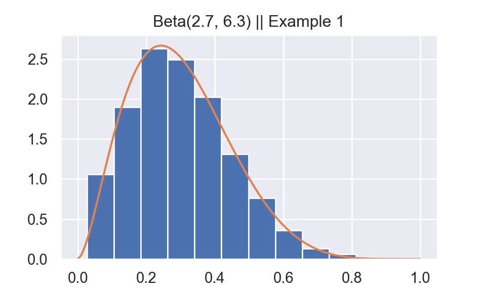
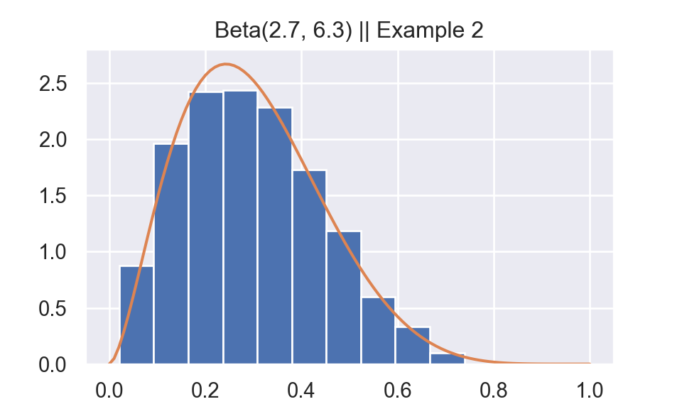
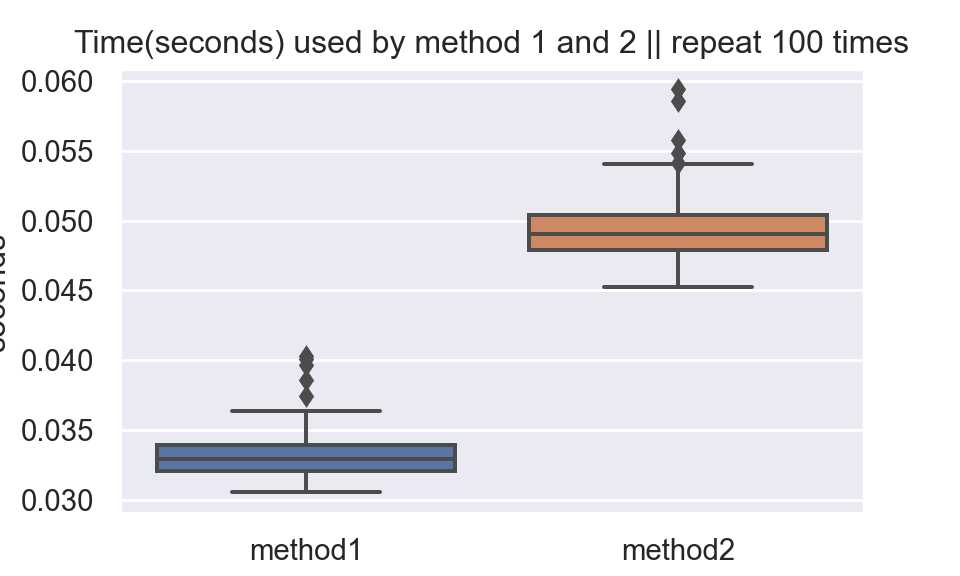

Let \(Y \sim f_{Y}(y)\) and \(V \sim f_{V}(V),\) where \(f_{Y}\) and \(f_{V}\) have common support with
\[M=\sup _{y} f_{Y}(y) / f_{V}(y)<\infty \quad \Longrightarrow \quad \frac{f_Y(y)}{M f_V(y)} \le 1\]
To generate a random variable \(Y \sim f_Y\):
a. Generate \(U \sim\) uniform\((0,1), V \sim f_{V},\) independent.
b. If \(U<\frac{1}{M} f_{Y}(V) / f_{V}(V),\) set \(Y=V ;\) otherwise, return to step (a).
Proof:
\[\begin{aligned} P(V \leq y | \text { stop }) &= P\left(V \leq y | U<\frac{1}{M} f_{Y}(V) / f_{V}(V)\right)\\ &= \frac{P\left(V \leq y, U<\frac{1}{M} f_{Y}(V) / f_{V}(V)\right)}{P\left(U<\frac{1}{M} f_{Y}(V) / f_{V}(V)\right)}\\ &= \frac{\int_{-\infty}^{y} \int_{0}^{\frac{1}{M } f_{Y}(v) / f v(v)} 1 d u f_{V}(v) d v}{\int_{-\infty}^{\infty} \int_{0}^{\frac{1}{M} f_{y}(v) / f_{V}(v)} 1 d u f_{V}(v) d v}\\ &= \frac{\int_{-\infty}^{y} \frac{1}{M} f_{Y}(v) dy}{\int_{-\infty}^{\infty} \frac{1}{M} f_{Y}(v) dy}\\ &=\int_{-\infty}^{y} f_{Y}(v) d y\\ &= P(Y\le y) \end{aligned}\]
Hence the Accept/Reject Algorithm works.
Note that
\[P(\text{stop}) = P\left(U<\frac{1}{M} f_{Y}(V) / f_{V}(V)\right) = \int_{-\infty}^{\infty} \int_{0}^{\frac{1}{M} f_{y}(v) / f_{V}(v)} 1 d u f_{V}(v) d v = \frac{1}{M}\]
I write Python code to reproduce Example 5.6.7 on Casella and Berger (2001).
Generate \(Y \sim\) beta(a = 2.7, b = 6.3)
1. Generate \((U,V)\) independent uniform(0,1).
2. If \(U < \frac{1}{c} f_Y(V)\) then, set \(Y = V\); otherwise, return to step 1. Where \(c = \text{max}_y f_Y(y) = 2.669\)
import numpy as np
import pandas as pd
import matplotlib.pyplot as plt
from scipy.special import gamma
import seaborn as sns
sns.set()
np.random.seed(523)
def f1(x):
a = 2.7
b = 6.3
beta = gamma(a) * gamma(b) /gamma(a + b)
p = x ** (a - 1) * (1-x) ** (b - 1)
return 1/beta * p
mode = (2.7-1)/(2.7+6.3-2) ##Mode of Beta distribution
c = f1(mode)
def beta_gen(n):
i = 0
output = np.zeros(n)
while i < n:
U = np.random.uniform(size = 1)
V = np.random.uniform(size = 1)
if U < 1/c * f1(V):
output[i] = V
i = i + 1
return output
px = np.arange(0,1+0.01,0.01)
py = f1(px)
Y = beta_gen(n = 1000)
fig,ax = plt.subplots()
temp = ax.hist(Y,density=True)
ax.plot(px,py)
plt.title("Beta(2.7, 6.3) || Example 1")
plt.show()
plt.close()I reproduce Example 5.6.9 from Casella and Berger (2001).
Generate \(Y \sim\) beta(a = 2.7, b = 6.3)
1. Generate \(U \sim\) uniform(0,1), \(V \sim\)beta(2,6)
2. If \(U<\frac{1}{M} \frac{f_{Y}(V)}{f_{V}(V)},\) set \(Y=V ;\) otherwise, return to step 1. Where \(M = 1.67 = \text{sup}_y \frac{f_Y(y)}{f_V(y)}\)
Where \(\text{beta}(2,6)\) can be generated by this relationship
\[Y=\frac{\sum_{j=1}^{a} \log \left(U_{j}\right)}{\sum_{j=1}^{a+b} \log \left(U_{j}\right)} \sim \operatorname{beta}(a, b)\]
##Beta(2,6) Generation
def beta_gen2(n):
i = 0
output = np.zeros(n)
while i < n:
U = np.random.uniform(size = 2 + 6)
p1 = np.sum(np.log(U[0:2]))
p2 = np.sum(np.log(U))
output[i] = p1/p2
i = i + 1
return output
##PDF of Beta(2,6)
def f2(x):
a = 2
b = 6
beta = gamma(a) * gamma(b) /gamma(a + b)
p = x ** (a - 1) * (1-x) ** (b - 1)
return 1/beta * p
def beta_gen3(n):
i = 0
M = 1.67
output = np.zeros(n)
while i < n:
U = np.random.uniform(size = 1)
V = beta_gen2(1)
if U < (1/M) * (f1(V)/f2(V)):
output[i] = V
i = i + 1
return output
Y = beta_gen3(n = 1000)
fig,ax = plt.subplots()
temp = ax.hist(Y,density=True)
ax.plot(px,py)
plt.title("Beta(2.7, 6.3) || Example 2")
plt.show()
plt.close()In Example 1, the acceptance rate is \(\frac{1}{2.669} = 0.37467\).
In Example 2, the acceptance rate is \(\frac{1}{1.67} = 0.59880\).
It seems that algorithm in example 2 would be faster than algorithm in example 1. However, it is not true. Because in example 2, to get 1 Beta(2,6) sample we need 8 uniform(0,1) samples. This result surprises me.
import timeit
method1 = timeit.repeat(lambda :beta_gen(n = 1000), repeat = 100, number = 1)
method2 = timeit.repeat(lambda :beta_gen3(n = 1000), repeat = 100, number = 1)
df1 = pd.DataFrame({"seconds":method1,"method":"method1"})
df2 = pd.DataFrame({"seconds":method2,"method":"method2"})
df_plot = pd.concat((df1,df2))
fig,ax = plt.subplots()
ax = sns.boxplot(x = "method", y = "seconds", data = df_plot)
ax.set_title("Time(seconds) used by method 1 and 2 || repeat 100 times")
plt.show()
plt.close()